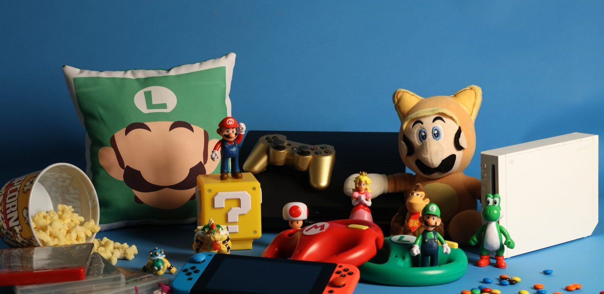

Het leukste Super Mario-speelgoed
Zes Super Mario-cadeaus die echt van elkaar verschillen, van een knuffel tot de LEGO-startset. Met per stuk voor wie het bedoeld is, wat eraan tegenvalt, en de dure valkuil bij LEGO Super Mario.

In het kort
Zes Super Mario-cadeaus die echt van elkaar verschillen, van een knuffel van vijftien euro tot de LEGO-startset. Klik op een naam om naar de uitleg te springen. De prijzen komen live van bol, dus wat je hier ziet is wat het nu kost.
Lees je maar één ding op deze pagina, lees dan dit: LEGO Super Mario werkt alleen met een startset. De elektronische Mario-figuur zit daar in, en zonder die figuur doet geen enkele uitbreidingsset iets. Er worden elk jaar veel uitbreidingssets als cadeau gegeven aan kinderen die geen startset hebben.
Waar het verschil in zit
Super Mario is geen superheld met één soort speelgoed. Het is een spel, en dat maakt het aanbod breder en verwarrender dan bij Batman of Spider-Man. Vier dingen bepalen of een cadeau aankomt.
Kent je kind Mario van de console of van de film? Dat is de belangrijkste vraag, en niemand stelt hem. Komt Mario van de Switch, dan gaat het meestal om Mario Kart en om de spelwereld. Komt hij van de film, dan gaat het om de personages en herkent je kind vooral gezichten. Die twee kinderen willen niet hetzelfde.
Alleen of samen. Het meeste Mario-speelgoed is voor één kind. Wil je iets waar met z'n tweeën of met het gezin aan te doen valt, dan zoek je een spel en geen speelgoed, en dan is de keuze meteen veel kleiner.
Startset of uitbreiding. Zie de waarschuwing hierboven. Dit geldt alleen voor LEGO Super Mario, maar dat is wel de grootste en duurste categorie.
Beoordelingen, en hoeveel het er zijn. Bij Mario valt op dat de nieuwe filmfiguren er nauwelijks beoordelingen bij hebben staan, terwijl de oudere lijnen er tientallen tot honderden hebben. Dat is een reden om voorzichtig te zijn met wat er nieuw en glanzend uitziet.
Onze zes keuzes
Luigi-knuffel, 30 cm
Voor kleine kinderen is Mario geen spel maar een figuur die ze kennen. Een knuffel van 30 cm is dan de enige keuze die klopt: niets kan kwijtraken, niets is te klein, en hij mag mee naar bed. Wij kiezen Luigi en niet Mario, om een saaie reden die wel klopt: de Luigi van dit formaat is goedkoper dan dezelfde Mario.
- Ruim vijftig beoordelingen en een hoge score, veel voor speelgoed
- Goedkoopste keuze op deze pagina
- Geen losse onderdelen, dus geschikt vanaf peuterleeftijd
- Het blijft een knuffel: er valt niets mee te doen
- Wie per se Mario zelf wil, betaalt bij hetzelfde formaat meer
Hover Shell Strike, actiespel
Een goedkoop spelletje dat het op tafel doet en waar twee kinderen samen aan kunnen. Dat laatste is bij Mario-speelgoed zeldzamer dan je zou denken: het meeste is voor één kind in zijn eentje. Ruim dertig beoordelingen, wat voor dit soort speelgoed veel is.
- Ruim dertig beoordelingen, veel voor speelgoed in deze prijsklasse
- Met zijn tweeën te spelen, in tegenstelling tot de meeste keuzes hier
- Kost minder dan een tientje meer dan niets, en is zo weer opgeruimd
- Vier sterren, dus geen unaniem enthousiasme
- Kort spelletje: dit is geen middagvulling
Hot Wheels Mario Kart-racebaan
Veel kinderen kennen Mario vooral van Mario Kart, en dat is een spel op een console. Dit is de enige manier op deze pagina om dat op de vloer te doen. De baan werkt met de Hot Wheels-karts, die los ook los verkrijgbaar zijn, dus hij groeit mee.
- Brengt Mario Kart naar de vloer, zonder scherm
- Werkt met losse karts die je later kunt bijkopen
- Middenprijs
- Maar drie beoordelingen, dus daar valt weinig uit op te maken
- Neemt ruimte in en wil eigenlijk blijven liggen
- Eén kart in de doos: voor een race heb je er twee nodig
Ravensburger Super Mario Labyrinth
Met afstand het meest beoordeelde product op deze pagina, en niet omdat er Mario op staat: dit is het klassieke Labyrinth-spel in een Mario-jasje. Daardoor is het het enige cadeau hier dat een volwassene ook echt leuk vindt om mee te doen, en dat is precies wat een cadeau langer laat meegaan.
- Ruim driehonderd beoordelingen, veruit het meest van alles hier
- Voor twee tot vier spelers, dus voor het hele gezin
- Een bewezen spel, niet alleen een merk op een doos
- Het is een bordspel, geen speelgoed om zelf mee te spelen
- Vanaf ongeveer zeven jaar; jonger haakt af bij de regels
LEGO Super Mario startset met Mario
Dit is de belangrijkste keuze op deze pagina, en niet omdat hij de duurste is. LEGO Super Mario werkt met een elektronische Mario-figuur die punten telt als je hem over de baan laat lopen, en die figuur zit alléén in een startset. Zonder deze doos doet geen enkele uitbreidingsset iets. Met bijna tweehonderd beoordelingen is dit ook de meest beoordeelde LEGO-set van de hele reeks.
- Bijna tweehonderd beoordelingen, veruit het meest van alle LEGO Super Mario
- Bevat de elektronische Mario-figuur, die je voor alle andere sets nodig hebt
- Bouwen en spelen in één: de baan is niet af, hij verandert steeds
- Duurste keuze op deze pagina
- Vraagt batterijen en een telefoon-app om alles eruit te halen
- Zonder uitbreidingen wordt de baan op den duur voorspelbaar
LEGO-uitbreiding: Bowsers Bolide
De logische tweede doos, mét de grootste tegenstander erin. Let op: dit is een uitbreidingsset, en die doet niets zonder de startset hierboven. Dat staat klein op de doos en het is de duurste vergissing die je bij LEGO Super Mario kunt maken. Heb je de startset al, dan is dit de doos waar de meeste tegenstand in zit.
- Bowser erbij, en dat is waar het spel om draait
- Bijna twintig beoordelingen met een hoge score
- Sluit direct aan op de startset
- Werkt niet zonder een startset: dit is geen los cadeau
- Als tweede doos is het een flinke uitgave bovenop de eerste
Welk Mario-cadeau past bij welke leeftijd
2 tot 5 jaar. Een knuffel, en verder niets. Op deze leeftijd is Mario een figuur die ze herkennen, geen spel dat ze snappen. Alles met kleine onderdelen of met regels valt af.
5 tot 8 jaar. Nu kan het spel erbij: een kort actiespel, of de racebaan als je kind Mario Kart kent. De LEGO-startset kan aan de bovenkant van deze leeftijd, maar reken erop dat je de eerste keren meebouwt.
8 jaar en ouder. Dit is de leeftijd waarop LEGO Super Mario echt gaat werken, omdat het kind de baan dan zelf gaat verbouwen in plaats van hem één keer na te bouwen. Het bordspel werkt vanaf ongeveer zeven jaar en gaat daarna jaren mee. Meer per leeftijd staat in superhelden cadeau per leeftijd.
Wat wij niet zouden kopen
Een LEGO-uitbreidingsset als los cadeau. Dit is de grootste valkuil van deze hele pagina, en hij kost het meeste geld. Weet je niet zeker of het kind een startset heeft, koop dan geen uitbreiding. Zeg desnoods dat je het vraagt: dat is minder vervelend dan een doos die op de ochtend zelf niets doet.
Filmfiguren zonder één beoordeling. Rond een nieuwe Mario-film verschijnt er een golf figuren die er goed uitziet en waar nog niemand iets over heeft geschreven. Soms zijn ze prima. Maar je betaalt dan de nieuwprijs zonder dat iemand je kan vertellen of ze stevig zijn, en bij speelgoed is stevigheid het enige dat telt.
De heel grote LEGO-sets boven de honderd euro. Bowsers luchtschip en het kasteel van Peach zien er indrukwekkend uit en zijn ook goed beoordeeld, maar het zijn uitbreidingen: ze hebben dezelfde startset nodig, en ze zijn bedoeld voor een kind dat er al een half jaar mee speelt. Als eerste cadeau is het weggegooid geld.
Losse Hot Wheels-karts als hoofdcadeau. Ze kosten rond de twintig euro per stuk en het is één autootje. Leuk als aanvulling, mager als het cadeau.
Hoe wij deze zes gekozen hebben
Met de hand uitgezocht, en niet automatisch opgehaald op wat het beste verkoopt. Bewust gespreid over prijs (van ongeveer vijftien tot ruim tachtig euro), over leeftijd (twee tot tien jaar) en over soort (knuffelen, spelen, racen, bouwen, en samen aan tafel). Wat hier stond is nagelopen op 25 augustus 2026.
Eerlijk erbij: speelgoed krijgt bij bol vaak maar een paar beoordelingen. Vijf sterren uit twee beoordelingen zegt niets, en daarom staat het aantal er altijd bij. Bij Mario viel dat juist mee: vijf van de zes keuzes hier hebben er meer dan tien, en het bordspel ruim driehonderd. Dat is de reden dat de nieuwe filmfiguren, die er stuk voor stuk nul hebben, niet in deze lijst staan.
Via de knoppen naar bol verdienen wij een kleine commissie. Dat verandert niets aan wat hier staat: valt een product bij bol weg, dan verdwijnt het blok inclusief onze tekst, zodat er nooit een aanbeveling blijft staan bij iets wat er niet meer is.
💡 Wist je dat?
Mario heette eerst gewoon Jumpman, en hij was timmerman in plaats van loodgieter. Hij kreeg zijn snor en zijn pet om een praktische reden: op de kleine beeldschermen van 1981 waren een mond en haar niet te tekenen, een snor en een pet wel. Meer over Mario lees je hier.
Wil je eerst meer weten? Lees alle power-ups van Super Mario, bekijk de hele Super Mario pagina, of blader door alle gidsen.
Veelgestelde vragen
Wat is het leukste Super Mario-speelgoed?
Dat hangt af van de leeftijd en van waar je kind Mario van kent. Voor 2 tot 5 jaar een knuffel, voor 5 tot 8 jaar een kort actiespel of de Mario Kart-racebaan, en vanaf 8 jaar de LEGO Super Mario startset. Kent je kind Mario vooral van Mario Kart, kies dan de racebaan en niet de LEGO.
Heb ik een LEGO Super Mario startset nodig?
Ja. De elektronische Mario-figuur die punten telt, zit alleen in een startset, en zonder die figuur doet geen enkele uitbreidingsset iets. Koop dus nooit een uitbreidingsset als los cadeau tenzij je zeker weet dat het kind al een startset heeft. Dit is de duurste vergissing die je bij Mario-speelgoed kunt maken.
Wat kost Super Mario-speelgoed?
Een knuffel van 30 cm begint rond de vijftien euro, een klein actiespel ligt daar vlak boven, een racebaan rond de veertig euro en het bordspel rond de veertig. LEGO Super Mario begint bij een startset van ruim tachtig euro; uitbreidingssets liggen tussen de veertien en de honderddertig euro. De actuele prijzen staan in de blokken hierboven en komen rechtstreeks van bol.
Vanaf welke leeftijd is Super Mario-speelgoed geschikt?
Knuffels vanaf ongeveer twee jaar, actiespellen en racebanen vanaf een jaar of vijf, LEGO Super Mario meestal vanaf zes tot acht jaar, en het bordspel vanaf ongeveer zeven jaar. De leeftijd op de doos is bij LEGO een goede maat; kijk daarnaast naar het aantal onderdelen.
Is Super Mario-speelgoed ook leuk zonder Nintendo Switch?
Ja, en dat is juist het punt van de meeste keuzes op deze pagina. Het bordspel, de knuffel, het actiespel en de racebaan werken allemaal zonder console. Alleen LEGO Super Mario haalt meer uit een telefoon-app, maar ook die set werkt zonder.